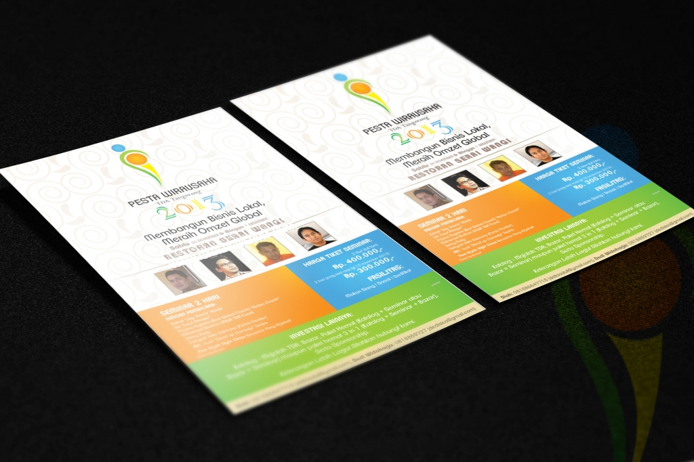
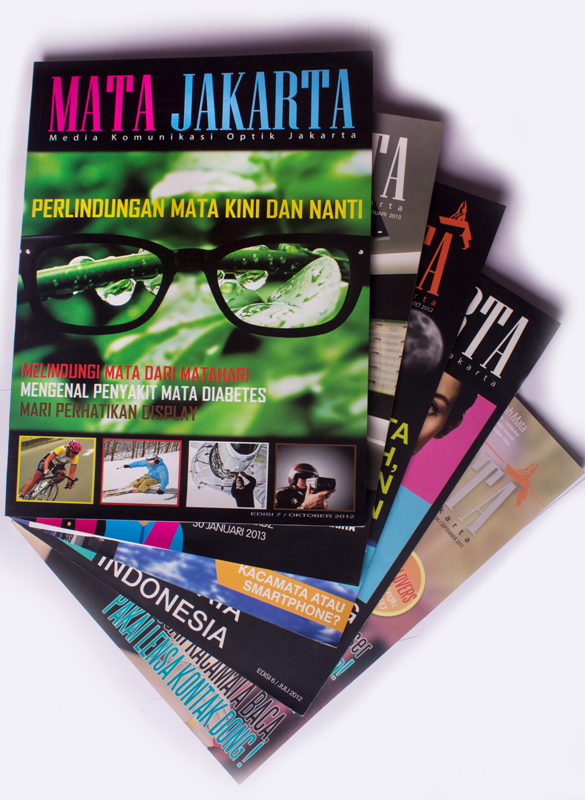

Our Service
Menu
Newsletter
Newsletter adalah salah satu produk dari Infinity Media. Newsletter atau yang disebut dengan nawala merupakan alat komunikasi yang digunakan humas organisasi maupun perusahaan dalam memberikan informasi kepada pembacanya. Informasi itu meliputi produk yang dihasilkan, orang yang terlibat, serta informasi lain yang dapat membantu publiknya dalam berhubungan dengan usaha maupun bisnisnya. Pembuatan dan pengiriman nawala secara teratur memungkinkan pihak yang terkait untuk mengetahui perkembangan informasi pada perusahaan baik untuk internal maupun eksternal. Nawala pun memiliki berbagai fungsi komunikasi yang berguna bagi perusahaan di antaranya, pertama, membuat publik familier dengan perusahaan tersebut dan selanjutnya selalu ingin untuk mengetahui aktivitas yang dilakukan oleh perusahaan. Kedua, menyebarkan informasi untuk menarik perhatian publik internal dan eksternal terkait keberlangsungan organisasi. Ketiga, untuk membangun dan menjaga hubungan baik dengan klien dan pembacanya.
Inhouse Magazine
Setiap instansi maupun perusahaan berkelas membutuhkan sebuah media humas yang andal dan terpercaya. Inhouse Magazine menjadi pilihan tepat dan terlengkap untuk mengetahui informasi internal sebuah lembaga atau perusahaan. Inhouse magazine mengemban misi sebagai jembatan komunikasi antara manajemen dengan karyawan dan antar-karyawan. Dengan begitu, media ini mendukung terciptanya suasana kondusif karena informasi berjalan lancar. Selain itu Inhouse Magazine juga memegang peranan penting untuk menguatkan relasi dengan pelanggan, sebagai sarana promosi yang elegan dan efektif. Inhouse Magazine juga memiliki peran sebagai alat untuk pembentuk citra (image building) suatu perusahaan/organisasi karena fungsi media internal juga dapat dijadikan sebagai media promosi dan komunikasi dengan “stakeholder”.
Buku
Infinity Media menjadi sarana tepat bagi Anda untuk menerbitkan berbagai buku. Melalui desain dan dan layout yang tepat, sebuah buku akan menjadi sangat menarik dalam memberikan informasi bagi pembaca. Melalui proses editing yang tepat oleh editor, maka penyampaian pesan yang disampaikan akan mudah dimengerti oleh pembaca. Infiniti Media menjadi solusi dalam menerbitkan buku Anda.